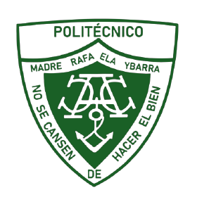

Proyects
TOMOC (The Online Math Olympiads Compilation) is a website (similar to a Stack Exchange) that aims to compile all math Olympiad problems to help young Olympiad participants study and find problems at their level more easily. It also allows users to create and publish their own problems to receive help from the community. Finally, it also aims to assist organizations or teams looking to coach their students by providing an all-in-one application to facilitate and enhance learning.
github.com/TOSMOC/tosmoc-public
Florcast is a project that combines science, technology and nature to predict and visualize flowering events. Our goal is to offer an accessible tool that benefits communities, farmers, beekeepers, and scientist, promoting a greater understanding of the importance of flowers and their environmental impact.
florcast.earth
POMARAY Website
This is the official website of my polytechnic where I currently study! It was created by the students of the polytechnic to automate and solve some problems that were being encountered there.
pomaray.edu.do